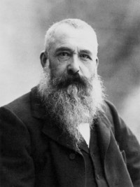
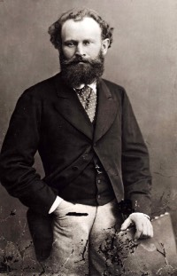
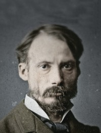
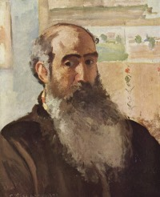
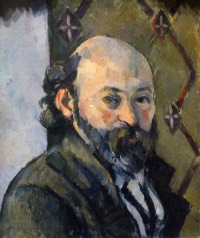

CLAUDE MONET
Nació el 14 de noviembre de 1840 en la Rue Lafitte 45 de París. Era el segundo hijo de Claude Adolphe Monet y su esposa Louise Justine Aubrée. A mediados de la década de 1890, Monet desarrolló el concepto de las «series», en las que un motivo es pintado repetidas veces con distinta iluminación. Al mismo tiempo comenzó a trabajar en el famoso jardín de su casa en Giverny con estanques de nenúfares que luego utilizó como motivo para sus pinturas. En 1873 Claude Monet conoce en Argenteuil a Gustave Caillebotte, con el que acuerda realizar exposiciones conjuntas. Para este propósito es fundada en diciembre la Sociéte Anonyme Coopérative d' Artistes-Peintres, -Sculpteurs, -Graveurs, etc. A esta sociedad se unieron los artistas que más tarde formarían el núcleo del impresionismo. La primera exposición del grupo se realizó en 1874 en el atelier del fotógrafo Nadar en el Boulevard des Capucines de París.
ÉDOUARD MANET
Nació en París el 23 de enero de 1832, en una familia acomodada. Sus días escolares pasaron sin acontecimientos destacables y terminó su formación sin obtener la calificación necesaria para estudiar derecho, para decepción de su padre, que era magistrado. Sus primeros contactos con el arte se produjeron en la etapa escolar. A los dieciséis años viajó a Río de Janeiro como marinero en prácticas, con intención de ingresar en la Academia Naval Francesa. Con el consentimiento paterno, decide iniciar los estudios en el taller de Thomas Couture. Las clases se complementaban con visitas a museos. En 1856 abandona el taller ya que consideraba anticuadas las enseñanzas del maestro. El 26 de octubre de 1863 contrajo matrimonio con la pianista neerlandesa Suzanne Leenhoff, con quien mantenía relaciones desde 1850. A pesar de la boda, el que casi con seguridad era su hijo, León, nacido en 1852, siguió llevando el apellido de la madre, y pasando por hermano de ella. En agosto de 1865 emprendió un viaje por España, organizado por su amigo Zacharie Astruc, en el que descubrió la pintura barroca española, en particular a Diego Velázquez, que tendrá una enorme influencia en su obra. En 1872 Paul Durand-Ruel adquirió por 35 000 francos veinticuatro obras de Manet y organizó la primera exposición de pintores impresionistas aunque no tuvo éxito comercial. Sin embargo, entre estos artistas iba surgiendo una conciencia de grupo que los llevaría a formar la Société anonyme des artistes para realizar exposiciones colectivas.
PIERRE AUGUSTE RENOIR
Nació el 25 de febrero de 1841, en el seno de una familia humilde, fue el sexto de los siete hios del sastre Léonard Renoir y la costurera Marguerite Merlet. En 1848, comenzó a asistir a una escuela religiosa dirigida por los Hermanos de las Escuelas Cristianas. En 1854, abandonó sus estudios en la escuela y fue enviado al taller de los hermanos Lévy con el fin de que aprendiera sobre el arte de la pintura en porcelana. Según Edmond Renoir, su hermano menor, su deseo de forjar una carrera artística era ya apreciable desde su niñez, cualido Auguste dibujaba sobre las paredes con trozos de carbón. En 1862, Renoir aprobó el examen de ingreso a la Escuela de Bellas Artes. Al mismo tiempo, frecuentaba un taller libre en el que enseñaba Charles Gleyre, profesor de aquella institución. Renoir obtuvo sobresalientes resultados en los concursos obligatorios de dibujo, de perspectiva, de anatomía y de semejanza, lo que demostraba de modo irrefutable lo fructífero de sus años de trabajo en el taller de Glevre. El período de estudio con Gleyre no se prolongó demasiado. En 1863, todos los miembros del grupo se vieron obligados a dejar el taller debido a su cierre, aunque Jean Renoir, hijo de Auguste, estima que su padre debió abandonarlo incluso antes, puesto que no tenía dinero para pagar sus estudios. Comenzó entonces una etapa de pobreza, pero también de nuevos encuentros, Renoir ofrece una interpretación más sensual del impresionismo, más inclinada a lo ornamental y a la belleza. No suele incidir en lo más áspero de la vida moderna. En sus creaciones muestra la alegría de vivir, incluso cuando los protagonistas son trabajadores. Siempre son personajes que se divierten, en una naturaleza agradable. Posee una vibrante y luminosa paleta que hace de él un impresionista muy especial.
CAMILE PISARRO
Nació el 10 de julio de 1830 en la isla de Saint Thomas, en el archipiélago de las Islas Virgenes, por aquel entonces una antigua posesión colonial del reino de Dinamarca en las Antillas, donde sus padres tenían una floreciente empresa de piezas para navíos en el puerto de Charlotte Amalie. Era hijo de Abraham Gabriel Pissarro, un judío sefardí de origen portugués con nacionalidad francesa, nacido en la ciudad de Burdeos en donde existía una importante comunidad de judíos portugueses. Su madre fue la dominicana Rachel Manzano-Pomié, descendiente de españoles. Pissarro, que había cursado parte de sus estudios en Paris desde el año 1843, frecuentaba el colegio de Auguste Savary, en donde aprendió dibujo, acuarela, grabado y técnicas para captar con eficiencia el paisaje al aire libre. Terminados sus estudios en 1847, regresa a Saint Thomas para trabajar y ayudar en el negocio de su padre. Además, en sus ratos libres en la isla se dedica a dibujar, aunque posteriormente abandonaría su hogar debido a la oposición de sus padres a su vocación como pintor. Considerado como uno de los padres del impresionismo, Pissarro pintó la vida rural francesa, en concreto los paisajes y las escenas en los que aparecían campesinos trabajando, pero también escenas urbanas en Montmartre. En París tuvo como discípulos a Paul Cézanne, Paul Gauguin, Jean Peské y Henri-Martin Lamotte; así como a su propio hijo Lucien Pissarro y a la pintora impresionista estadounidense Mary Cassatt. Pissarro fue asimismo un teórico de la anarquía, y frecuentó con asiduidad a los pintores de la Nueva Atenas que pertenecían a ese movimiento. Compartió esa posición con Gauguin, con quien luego tuvo relaciones tensas.
PAUL CEZANNE
Nació el 19 de enero de 1839. Fue un pintor francés posimpresionista, considerado el padre de la pintura moderna y cuyas obras establecieron las bases de la transición entre la concepción artística decimonónica hacia el mundo artístico del siglo XX, nuevo y diferente.Sin embargo, mientras vivió, Cézanne fue un pintor ignorado que trabajó en medio de un gran aislamiento. Desconfiaba de los críticos, tenía pocos amigos y hasta 1895 expuso solo de forma ocasional. Fue un «pintor de pintores», que la crítica y el público ignoraban, siendo apreciado solo por algunos impresionistas y al final de su vida por la nueva generación. En 1870 el Salón rechazó su Retrato de Achille Emperaire, por entender que era inaceptable al no respetar la perspectiva ni la corrección anatómica, juzgándolo «en el límite de lo grotesco». Cuando estalló la Guerra franco-prusiana en julio de 1870, Cézanne y Hortense dejaron París para ir a L'Estaque, cerca de Marsella, evitando así el alistamiento. Fue declarado prófugo en enero de 1871, pero la guerra acabó en febrero y la pareja pudo volver a París en verano. En enero del año siguiente, 1872, tuvieron a su hijo Paul en Paris. Entre 1872 y 1873, Cézanne pasó de los tonos oscuros a los colores brillantes y comenzó a concentrarse en escenas de la vida rural. En 1875, llamó la atención del coleccionista Victor Chocquet, cuyos encargos le proporcionaron algo de alivio financiero. Pasó el verano de 1876 en L'Estaque, lo que le dio la oportunidad de pintar dos marinas. El éxito comercial de los impresionistas era ya limitado de por sí y dentro de este grupo, las obras de Cézanne tuvieron la acogida más desfavorable. Sus pinturas provocaban hilaridad, indignación y sarcasmo. Cézanne no volvió a exponer con el grupo.
VICENT VAN GOGH

Nació el 30 de marzo de 1853. Hijo de un austero y humilde pastor protestante neerlandés llamado Theodorus y de su mujer, Anna Cornelia. Durante la infancia acudió a la escuela de manera discontinua e irregular, pues sus padres le enviaron a diferentes internados. Dos años después se matriculó en la escuela secundaria HBS Koning Willem II (Tilburg) viviendo con la familia Hannik en la calle Sint Annaplein 18-19 y permaneció allí hasta que dejó los estudios de manera definitiva a los quince años. Por entonces comenzó su afición por la pintura. Sobre su infancia, Vincent van Gogh comentó: «Mi juventud fue triste, fría y estéril». Pintó unos 800 cuadros (entre ellos 43 autorretratos y 148 acuarelas) y realizó más de 1600 dibujos. Una figura central en su vida fue su hermano menor Theo, marchante de arte en París, quien le prestó apoyo financiero de manera continua y desinteresada. Desde joven tuvo inclinación hacia el dibujo. Su primer trabajo fue en una galería de arte. Más tarde se convirtió en pastor protestante y en 1879, a la edad de veintiséis años, se marchó como misionero a una región minera de Bélgica, donde comenzó a dibujar a la gente de la comunidad local. En 1885 pintó su primera gran obra, Los comedores de patatas. En ese momento su paleta se componía principalmente de tonos sombríos y terrosos. La luz y la preferencia por los colores vivos por la que es conocido surgió posteriormente, cuando se trasladó al sur de Francia, consiguiendo su plenitud durante su estancia en Arlés en 1888. La calidad de su obra fue reconocida solo después de su muerte, en una exposición retrospectiva en 1890, considerándose en la actualidad uno de los grandes maestros de la historia de la pintura. Falleció a los treinta y siete años de edad por una herida de bala.